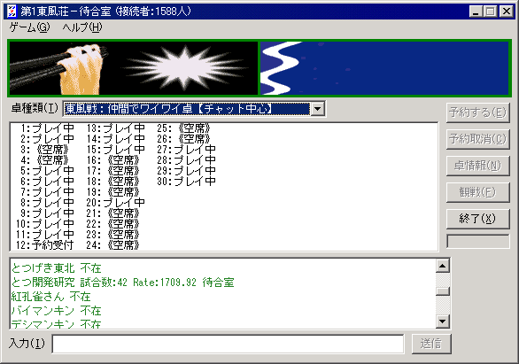

具体的にプログラムを作って動かすには？
C++のコンパイラを使って、コンソールアプリとして構築してみましょう。
マニュアルの指示どおりにサンプルをコピペしていきます。
一部「ShowMessage」などのコンパイラ依存の関数を使っているので、そういう部分は削除してしまいましょう。
下にあるコードのほとんど全部が、ただのコピペです。
そしてプログラムの最初で、必要なインクルードファイルを#includeでインクルードさせます。
また簡単のために、おなじみのint main（）から始まるようにしたので、returnのところは返り値を適当につけてやります。
赤字になっている部分以外は、「ShowMessage」を削除したり、「return」を「return -1」に変えたりしているだけで、基本的にコピペです。
これをこのままコンパイルすれば（たぶん）動くと思います。
当然、MJexeIO.dllを実行ファイルと同じフォルダに置いておく必要があります。
VisualC++の場合、キャストの制限が違うようで、
GetHaiSize = ( GETHAISIZE )::GetProcAddress( hDll, "_GetHaiSize" );
のような部分でキャストエラーが出るようです。
コンパイラの指示通り、ここを
GetHaiSize = ( GETHAISIZE )::GetProcAddress( (struct HINSTANCE__ *)hDll, "_GetHaiSize" );
に直してやることで、コンパイルできます。
#include"windows.h"
#include"string.h"
//★以下はヘッダ部分に記述
//インポート関数の型定義（下の各関数の説明を読んで、同じ型で定義します）
typedef int (*GETTEHAI)(int,int *);
typedef int (*GETSUTEHAI)(int,int,int *);
typedef int (*GETSUTEHAINUM)(int,int,int *);
typedef int (*GETDLLVERSION)(void);
typedef int (*GETKAZE)(int);
typedef int (*GETTURNPLAYER)(int);
typedef int (*GETFUROHAI)(int,int,int *);
typedef int (*GETTONPUDATA)(char *);
typedef int (*GETHAISIZE)(void);
typedef int (*GETDORAHAI)(int,int *);
typedef int (*PUSHHAI)(int,int);
typedef int (*PUSHFUNCTIONKEY)(int);
typedef int (*RCLICK)(void);
typedef int (*GETTONPUINFO)(HWND *,HWND *);
typedef int (*CHECK_TENPAI)(int *,int *);
typedef int (*CHECK_AGARIHAI)(int *,int);
typedef int (*SETMODE)(int);
typedef int (*GETAVAILABLEFUNCTIONKEY)(int *,int);
typedef int (*EXISTAVAILABLEFUNCTIONKEY)(int);
typedef int (*GETRIGHTESTTEHAI)(void);
typedef int (*EXT_GETHAI)(int,int,int,int);
typedef int (*GETPLAYERINFO)(int *,int *,int,int) ;
typedef int (*GETHOLDTIME)(int);
typedef int (*GETREACH)(int,int);
typedef int (*SENDCHAT)(char *,int,int);
//インポート関数型の関数へのポインタ変数宣言
GETTEHAI GetTehai;
GETSUTEHAI GetSutehai;
GETSUTEHAINUM GetSutehaiNum;
GETDLLVERSION GetDLLVersion;
GETKAZE GetKaze;
GETTURNPLAYER GetTurnPlayer;
GETFUROHAI GetFurohai;
GETTONPUDATA GetTonpuData;
GETHAISIZE GetHaiSize;
GETDORAHAI GetDorahai;
PUSHHAI PushHai;
PUSHFUNCTIONKEY PushFunctionKey;
RCLICK RClick;
GETTONPUINFO GetTonpuInfo;
CHECK_TENPAI Check_tenpai;
CHECK_AGARIHAI Check_agarihai;
SETMODE SetMode;
GETAVAILABLEFUNCTIONKEY GetAvailableFunctionKey;
EXISTAVAILABLEFUNCTIONKEY ExistAvailableFunctionKey;
GETRIGHTESTTEHAI GetRightestTehai;
EXT_GETHAI ext_GetHai;
GETPLAYERINFO GetPlayerInfo;
GETHOLDTIME GetHoldTime;
GETREACH GetReach;
SENDCHAT SendChat;
int main()
{
int tmphai[51],size; //汎用
HANDLE hDll = ::LoadLibrary( "MJexeIO.dll" ); //DLLをロード
if(hDll==NULL){return 0;} //DLLロードのエラーチェック
//DLLから必要な関数をインポート
GetHaiSize = ( GETHAISIZE )::GetProcAddress( hDll, "_GetHaiSize" );
GetDorahai = ( GETDORAHAI )::GetProcAddress( hDll, "_GetDorahai" );
GetTehai = ( GETTEHAI )::GetProcAddress( hDll, "_GetTehai" );
GetSutehai = ( GETSUTEHAI )::GetProcAddress( hDll, "_GetSutehai" );
GetSutehaiNum = ( GETSUTEHAINUM )::GetProcAddress( hDll, "_GetSutehaiNum" );
GetDLLVersion = ( GETDLLVERSION )::GetProcAddress( hDll, "_GetDLLVersion" );
GetKaze = ( GETKAZE )::GetProcAddress( hDll, "_GetKaze" );
GetTurnPlayer = ( GETTURNPLAYER )::GetProcAddress( hDll, "_GetTurnPlayer" );
GetFurohai = ( GETFUROHAI )::GetProcAddress( hDll, "_GetFurohai" );
GetTonpuData = ( GETTONPUDATA )::GetProcAddress( hDll, "_GetTonpuData" );
PushHai = ( PUSHHAI )::GetProcAddress( hDll, "_PushHai" );
PushFunctionKey = ( PUSHFUNCTIONKEY )::GetProcAddress( hDll, "_PushFunctionKey" );
RClick = ( RCLICK )::GetProcAddress( hDll, "_RClick" );
GetTonpuInfo = (GETTONPUINFO)::GetProcAddress(hDll,"_GetTonpuInfo");
Check_tenpai = (CHECK_TENPAI)::GetProcAddress(hDll,"_Check_tenpai");
Check_agarihai = (CHECK_AGARIHAI)::GetProcAddress(hDll,"_Check_agarihai");
SetMode = (SETMODE)::GetProcAddress(hDll,"_SetMode");
GetAvailableFunctionKey = (GETAVAILABLEFUNCTIONKEY)::GetProcAddress(hDll,"_GetAvailableFunctionKey");
ExistAvailableFunctionKey = (EXISTAVAILABLEFUNCTIONKEY)::GetProcAddress(hDll,"_ExistAvailableFunctionKey");
GetRightestTehai = (GETRIGHTESTTEHAI)::GetProcAddress(hDll,"_GetRightestTehai");
ext_GetHai = (EXT_GETHAI)::GetProcAddress(hDll,"_ext_GetHai");
GetPlayerInfo = (GETPLAYERINFO)::GetProcAddress(hDll,"_GetPlayerInfo");
GetHoldTime = (GETHOLDTIME)::GetProcAddress(hDll,"_GetHoldTime");
GetReach = (GETREACH)::GetProcAddress(hDll,"_GetReach");
SendChat = (SENDCHAT)::GetProcAddress(hDll,"_SendChat");
//DLL関数インポートのエラーチェック。この例では２つの関数だけをチェックしている。
if(GetHaiSize==NULL){return -1;} //DLL関数インポートのエラーチェック
if(GetDorahai==NULL){return -1;} //DLL関数インポートのエラーチェック
int i;
char str[1024]; //返り値受け取り用の文字列
char players[5][20];
strcpy(players[0],"/w とつげき東北\0");
strcpy(players[1],"/w とつ開発研究\0");
strcpy(players[2],"/w 紅孔雀さん\0");
strcpy(players[3],"/w バイマンキン\0");
strcpy(players[4],"/w デシマンキン\0");
for(i=0;i<5;i++)
SendChat(players[i],0,0); //チャットに文字列送信
//★以下は全ての動作を終了した後に一度だけ行う
//DLLの開放
FreeLibrary( hDll );
return 0;
}
実行結果画面

東風の画面で上のプログラムを実行すると、このように一瞬にして「一括/w」をすることができました。
MJexeIO.dllを利用すれば、主要部分はコピペで、使い勝手を整えボタンなどを配置すれば、実用的なツールを作ることができることがおわかりいただけたでしょう。